Usage
The Explore Signals window has two areas:
-
The side panel on the left contains the
Loaded Fileslist, theChannelslist, and the buttons for each tool. -
The plot area on the right shows the current visualization.
The typical workflow is: load a file, select it in Loaded Files, choose channels, then filter, visualize, clean, or export it.
Loading EEG/ExG data
Opening files
To load data:
-
Navigate to:
File > Open
-
Select one or more files. Supported formats are
.csvand.bdf.
Each file is added to the Loaded Files section. While a file is being read, it is shown with the label (loading…) and cannot be selected. Large recordings load in the background, so you can keep working while they load.
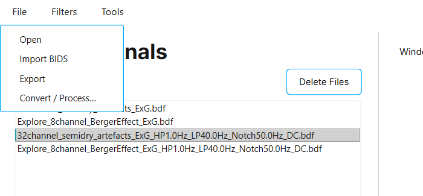
Companion files for CSV recordings
Explore .csv recordings consist of several files that are matched by file name. Keep them together in the same folder.
| File | Required | Purpose |
|---|---|---|
|
Yes |
The ExG signal. This is the file you open. |
|
Recommended |
Sampling rate and channel information. Without it, the data may not load correctly. |
|
Optional |
Event markers, shown on the time-domain plot. |
If you rename the files, for example after exporting filtered data, keep the _ExG.csv, _Meta.csv, and _Marker.csv endings so that the files are still matched.
Importing from a BIDS dataset
To load a recording from a BIDS dataset:
-
Navigate to:
File > Import BIDS
-
Click Browse BIDS Root and select the root folder of the dataset.
-
Select the
Subject,Session,Task, andDevice. TheRecording Infobox shows details of the selected recording. -
Click Import to File List.
Both the standard BIDS layout written for .bdf and .edf files and the CSV layout under derivatives/csv/ written by Explore Signals can be imported. Events from the dataset are loaded as markers.
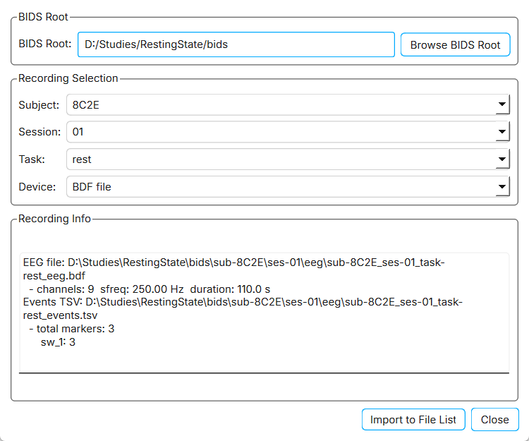
Channel selection
To choose which channels are used:
-
Select a file in the
Loaded Filessection. -
Check or uncheck channels in the
Channelssection. -
Use one of the visualization, cleaning, or export actions.
To quickly enable or disable all channels, use the Select All and Clear All buttons above the Channels section.
Only the checked channels are plotted, cleaned with ASR, and exported.
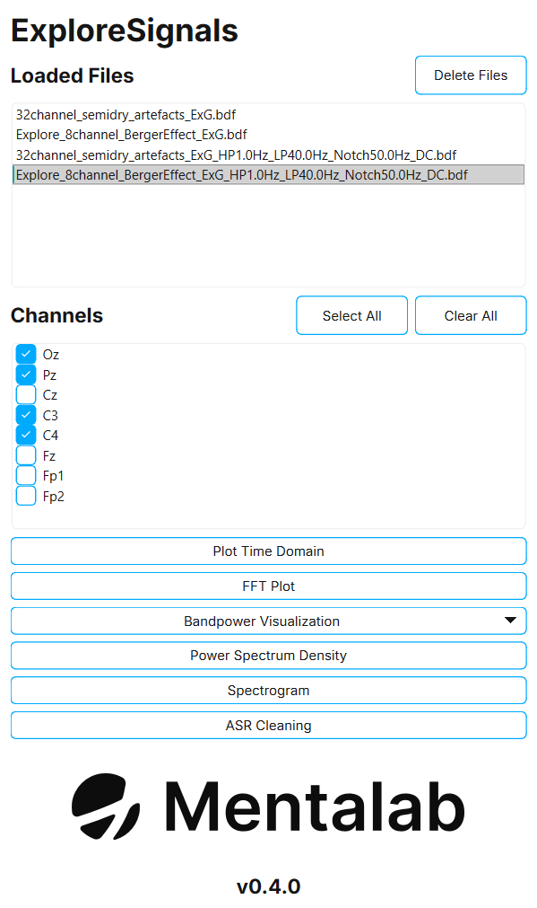
Applying filters
To apply filters:
-
Select the file you want to filter in the
Loaded Filessection. -
Navigate to:
Filters > Apply Filters
-
Fill in the filters you want to use. Leave a field empty to skip that filter.
-
Click Apply.
| Field | Effect |
|---|---|
|
High-pass filter. Removes slow drift below this frequency. |
|
Low-pass filter. Removes content above this frequency. |
|
Removes line noise at this frequency, typically |
|
Re-references every channel to the average of all channels. |
|
Removes the constant offset from each channel. |
The filtered data is added to the Loaded Files section as a new entry. Its name is based on the original file name and the filters that were applied. The original file is not changed.
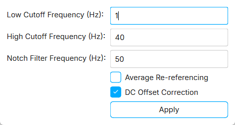
The time-domain viewer
Click Plot Time Domain to show the checked channels stacked above each other over time. Markers from the recording are drawn as vertical lines.
The viewer opens on the first 10 s of the recording, or on the whole recording if it is shorter. For recordings with many channels, it shows eight channels at a time. Scroll vertically or use the Channels control to see the rest.
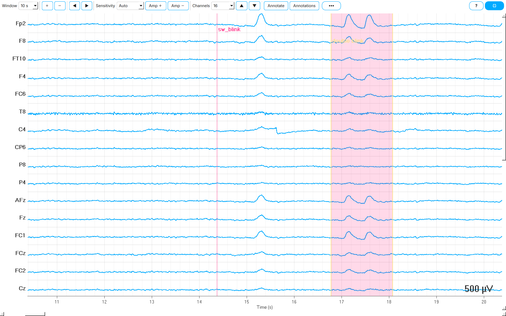
Toolbar
| Control | What it does |
|---|---|
|
Sets the visible time span. Choose |
＋ / － |
Zooms in or out in time. |
◀ / ▶ |
Pages backward or forward in time by one window. |
|
Sets the amplitude scale in µV per channel row. |
Amp ＋ / Amp － |
Makes the traces taller or shorter. |
|
Sets how many channels fit on screen at once: |
Annotate |
Turns on annotate mode. Drag on the plot to mark a time span. |
Annotations |
Shows or hides the list of markers and annotations. |
⋯ |
Opens a menu with |
? |
Shows a summary of all mouse and keyboard controls. |
Full-screen button |
Switches to full-screen mode. |
If the window is too narrow for the whole toolbar, the groups that do not fit move into a » menu at the right.
Mouse and keyboard controls
| Action | Control |
|---|---|
Pan through time |
Click and drag left or right. |
Scroll through time |
Scroll horizontally, or swipe with two fingers. |
Zoom in or out in time |
Ctrl + scroll, or ⌘ + scroll on macOS. You can also pinch on a trackpad. |
Change amplitude |
Shift + scroll, or the + and - keys. 0 resets the amplitude. |
Scroll through channels |
Scroll vertically. |
Highlight a channel |
Click its trace. Click again to remove the highlight. |
Align events across channels |
Hover over the plot. A vertical time cursor follows the mouse. |
Delete the selected annotation |
Del |
Full screen |
F11 switches full screen on or off. Esc exits. |
Hide or show the side panel |
Ctrl+B, or ⌘+B on macOS. You can also click the narrow strip to the left of the plot. |
Full screen and focus mode
Full-screen mode hides the menu bar and side panel so the plot fills the screen. Use it to review long recordings or many channels. Full screen is available for the time-domain plot. When you switch to another visualization, Explore Signals leaves full screen automatically.
To keep the menu bar but give the plot more room, hide only the side panel with Ctrl+B.
Annotations
Annotations let you mark spans of the recording while you review it:
-
Click Annotate.
-
Drag across the plot to mark a span. Click an existing annotation to select it.
-
Click Annotations to open the list next to the plot. The list contains both the markers from the recording and your own annotations, which are marked with ✎.
In the list you can:
-
Search by label.
-
Click an entry to jump to it.
-
Double-click one of your annotations, or select it and click Rename, to change its label.
-
Click Delete, or press Del, to remove the selected annotation.
Markers from the recording are read-only. Markers with timestamps outside the recording are hidden, and the list shows how many were hidden.
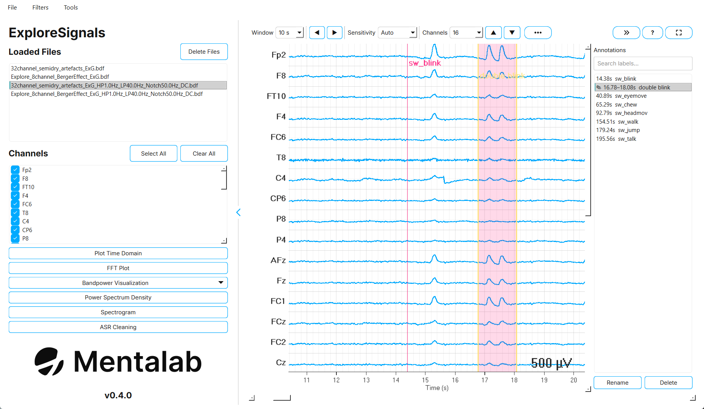
| Annotations you create in the viewer are only kept while the plot is open. They are not saved when you export the file. Markers from the recording are always kept. |
File and view information
Select File / view info… from the ⋯ menu to see:
-
The file format, file size, original start time, and sampling rate.
-
The total duration and the currently visible window.
-
The number of samples and annotations in view.
-
The minimum, maximum, and peak-to-peak value of each channel in µV.
By default, the channel values are calculated for the visible window. Select Whole recording to calculate them for the entire recording.
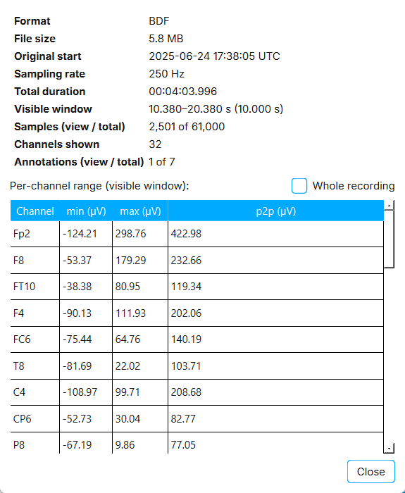
Other visualizations
These plots use the checked channels. Each one has a toolbar above it for zooming, panning, and saving the figure as an image.
FFT plot
Click FFT Plot to show the magnitude spectrum of each channel, calculated with the Fast Fourier Transform. The y-axis uses a logarithmic scale and the x-axis runs up to the Nyquist frequency.
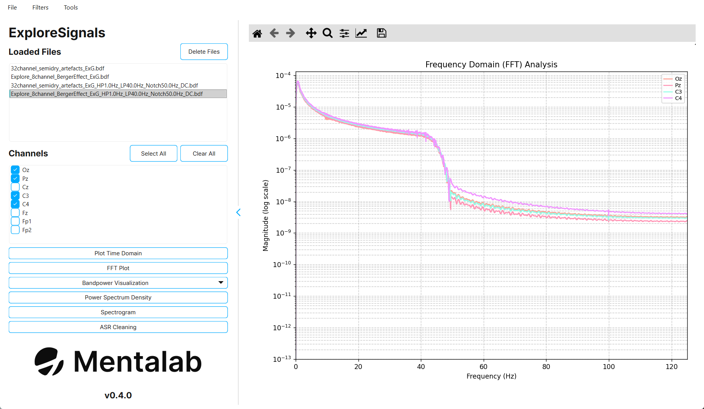
Bandpower visualization
Click Bandpower Visualization to show the power in the standard EEG frequency bands, averaged over the checked channels.
| Band | Range |
|---|---|
Delta |
|
Theta |
|
Alpha |
|
Beta |
|
Gamma |
|
Clicking the button shows two options.
Power Spectrum Density
Click Power Spectrum Density to show how power is distributed over frequency. The PSD is calculated with Welch’s method and averaged over the checked channels. Below the plot, Explore Signals lists which channels were included and which were excluded.
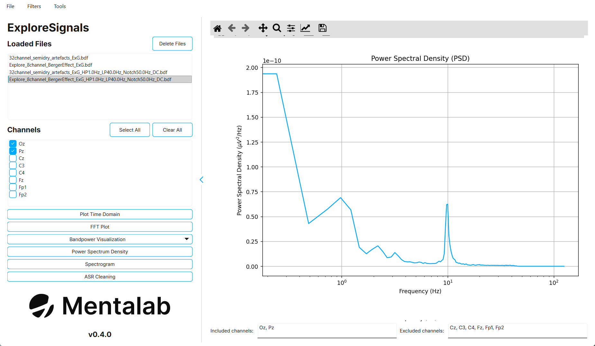
Artifact Subspace Reconstruction
Artifact Subspace Reconstruction, or ASR, removes high-amplitude, transient artifacts from multi-channel EEG. It learns what clean data looks like from a calibration window, then reconstructs the sections of the recording that deviate too far from it.
The ASR implementation in Explore Signals is based on parts of the open-source clean_rawdata plugin for EEGLAB.
Explore Signals applies ASR offline, to a recording you have already loaded. To apply ASR to a live signal while you are recording, use Explore Desktop and refer to the Artifact Subspace Reconstruction page in the Explore Desktop Guide.
| If you plan to apply ASR and work with cleaned data, make sure you understand the method and its limitations. ASR may remove signal together with artifacts and performs better on certain types of data. |
Before you apply ASR
-
Calibration data. ASR needs a calibration window. This should be a section of the data with as few artifacts as possible, ideally none.
-
Signal type. ASR is recommended for EEG signals. Output for other biosignals may be worse, for example if more signal than artifact is removed.
-
Number of channels. ASR requires multiple channels to clean signals effectively. Research suggests that ASR can achieve effective artifact removal for standard
20-channel EEG[1].
Standard deviation cutoff
The Cutoff field in the ASR pop-up is the standard deviation cutoff applied during cleaning. It sets the thresholds, relative to the calibration data, that decide which portions of the data are artifacts.
-
A lower cutoff causes more data to be recognized as artifacts.
-
A higher cutoff causes less data to be recognized as artifacts.
Typical values are:
-
3.0— aggressive -
5.0— standard, and the default in Explore Signals -
20.0— conservative, and the default in EEGLAB’sclean_rawdataplugin
Going below a cutoff of 3.0 is not recommended and is blocked by Explore Signals.
|
Calibration window
The Calibration Window sets the length of the data used for calibration. The default and minimum value is 30.0 s. For a cutoff of 20.0, the recommended calibration window is 60.0 s.
Calibration start
The Calibration Start sets the beginning of the calibration window.
The default setting is Auto, which places the start of the calibration window 20% into the recording. For example, if the recording is 120.0 s long and the calibration window is 30.0 s, the calibration window runs from 24.0 s to 54.0 s.
To choose the start yourself, select Manual start time and enter the starting second.
Applying ASR to a loaded file
To clean data using ASR:
-
Select the file in the
Loaded Filessection and check the channels to clean. -
Click ASR Cleaning.
-
Adjust the ASR parameters in the pop-up.
-
Optional: click Load Preset to load a recommended preset.
Preset Cutoff Calibration window Aggressive3.030 sStandard5.030 sConservative20.060 s -
Click Apply ASR.
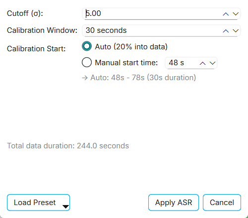
Comparing the cleaned and original data
When cleaning is finished, Explore Signals opens a comparison view with the cleaned data drawn over the original data. The comparison view has the same Window, zoom, paging, and Sensitivity controls as the time-domain viewer. In addition, use Show to choose between:
-
Both -
Cleaned only -
Original only
Select Save as PNG… from the ⋯ menu to save the comparison as an image.
| The ASR implementation applies a high-pass filter internally to correct for drift, so the cleaned signal is also zero-mean. If the original data is not filtered or not zero-mean, the two signals may not share the same baseline in the comparison view. |
The cleaned data is added to the Loaded Files section and can be visualized, processed, and exported like any other file.
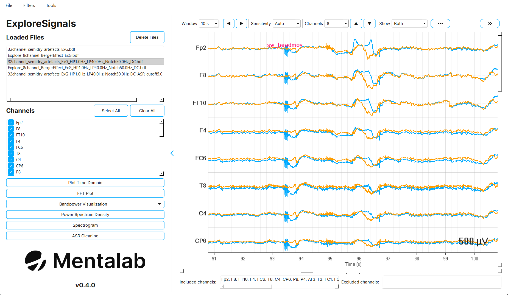
Exporting data
Original and processed data can be exported from the File menu.
To export data:
-
Select the file you want to export in the
Loaded Filessection. -
Check the channels you want to export. Only the checked channels are written.
-
Navigate to:
File > Export
-
Choose the file name and select
.csvor.bdfas the format.
Explore Signals adds _ExG to the file name if it is not already there.
-
When exporting to
.csv, markers are written to a matching_Marker.csvfile. -
When exporting to
.bdf, markers are stored inside the file. The data is written in BDF+ format using 24-bit resolution.
|
Exporting to When exporting to |
To convert whole recordings or folders between formats without loading them, use the Convert / Process wizard. See Convert / Process wizard.
Repairing CSV recordings
If packets are dropped while recording with explorepy or Explore Desktop, the binary file from the Explore device memory can be used to repair the recorded .csv file.
To repair a recorded .csv file:
-
Place the
.csvfile and the matching.BINfile in the same folder. -
Navigate to:
Tools > Repair ExG .csv with .BIN
-
Select the
.csvfile to repair. -
Click Repair.
The repaired file is saved in the same folder as the selected file. It has the same name, with _recovered_ExG added.
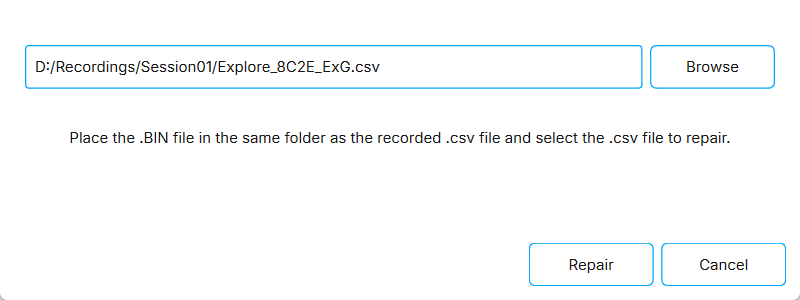
Support
For more information or support, contact support@mentalab.com.